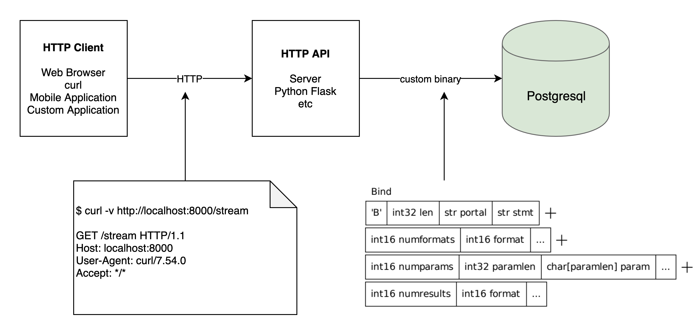

# <div style="text-align:center;font-size: 3em;line-height:3em;"> INFO 610 Fall 2019 </div> <div style="text-align:center;font-size: 1.5em;line-height:1.8em;">Week 17.5, Nov 7, 2019</div> <div style="text-align:center;font-size: 1em;line-height:1.8em;">DRY, Homework</div> <div style="text-align:center;font-size: 1.9em;line-height:3em;">chrisfauerbach.github.io/info610_fall_2019/</div> --- # What's an API?  * Application Programming Interface * Act as a common interface between systems --- # DRY - Donate Repeat Yourself * Remember this? ```python # Adding GET @app.route('/country/<id>', methods=['GET']) def get_country(id): conn = psycopg2.connect(dbname="postgres", user="postgres", password="postgres", host="localhost", port=5432) cur = conn.cursor(cursor_factory=psycopg2.extras.RealDictCursor) cur.execute("SELECT * FROM country WHERE country_id = %s;", (id, )) res = cur.fetchone() cur.close() conn.close() return res # Adding DELETE @app.route('/country/<id>', methods=['DELETE']) def del_country(id): conn = psycopg2.connect(dbname="postgres", user="postgres", password="postgres", host="localhost", port=5432) cur = conn.cursor(cursor_factory=psycopg2.extras.RealDictCursor) cur.execute("DELETE FROM country WHERE country_id = %s;", (id, )) res = cur.fetchone() cur.close() conn.close() return res ``` --- # Don't repeat. ```python # Adding GET @app.route('/country/<id>', methods=['GET']) @data_connection def get_country(id, cur=cur): cur.execute("SELECT * FROM country WHERE country_id = %s;", (id, )) res = cur.fetchone() return res # Adding DELETE @app.route('/country/<id>', methods=['DELETE']) @data_connection def del_country(id): cur.execute("DELETE FROM country WHERE country_id = %s;", (id, )) res = cur.fetchone() return res ``` --- # Python Trick * Function Decorators / Wrappers ```python def data_connection(func): def wrapper_to_add(*args, **kwargs): cur = None conn = None try: conn = psycopg2.connect(dbname="postgres", user="postgres", password="postgres", host="localhost", port=5432) cur = conn.cursor(cursor_factory=psycopg2.extras.RealDictCursor) func(*args, cur=cur, **kwargs) except: print("Exception while processing. Will Attempt to Rollback") traceback.print_exc(file=sys.stdout) try: if cur: cur.rollback() except: print("Had an issue rolling back.") traceback.print_exc(file=sys.stdout) finally: if cur: cur.close() if conn: conn.close() return wrapper_to_add ``` --- # Homework Build a single python file application: "my_api.py" * https://flask.palletsprojects.com/en/1.1.x/ Requirements: * Choose two tables (e.g. inventory, product) * Create a GET function for the collection, supporting at least ONE option parameter for filtering. * e.g. inventory?in_stock_count=5 * e.g. product?manufacturer=Logitech * name = request.args.get("name", "World") # World==default * Create a GET function that gets details by ID * Create a POST and PUT function for each of those tables * Update the database * If insert, return the new ID ("insert into ... returning id" - learn!) ```python json_data = request.get_json() email = json_data['email'] ``` * insert into my_table (value) values ('some value') returning id; ?? * At least ONE GET API that queries multiple tables. * product_inventory_with_descriptions --- # Example ```bash curl "http://myserver:5000/inventory" curl "http://myserver:5000/inventory?in_stock_count=5" curl "http://myserver:5000/inventory/4" curl "http://myserver:5000/product?manufacturer=Logitech" curl "http://myserver:5000/product/3" curl "http://myserver:5000/product_inventory_with_descriptions" curl -XPOST "http://myserver:5000/inventory -d \ '{"product_id": 4,"in_stock_count":5, "first_available":"01/02/2019.12:00:00"} ``` # Put it all together 1) SQL Scripts to create the DB 2) Python API 3) Bash script to run curl --- # --- # --- # --- # --- # --- #